본 리포트는
repro_mb/experiments_hc_3의 코드(stages/08~11,core/*)와 산출물(results/hc3_active_sink/pos0,pos1)을 직접 분석하여 작성하였다. 모든 그림은 텍스트(제목·주석)를 배제한 순수 시각화이며, 해석은 본문에서 한다. 그림의 색·축·기호 의미는 각 절에서 설명한다.
hc_3는 모델을 새로 돌리지 않고(model-free) hc_2의 추출 산출물(Llama-3.1-8B)을 재사용하여, "어텐션 싱크(attention sink)" 기반 방어 아이디어 4가지를 순서대로 검증한다.
핵심 메시지: hc_3의 프로브는 거의 완벽하게 공격 토큰을 분리한다. 다만 후술하듯 이 신호의 대부분은 "순수 어텐션 싱크"가 아니라 **내부 표현 norm(hidden_norm 등)**에서 나오며, 비교 대상이 서로 다른 토큰 정체성이라는 점에서 토큰 정체성/OOV 탐지에 가깝다는 구조적 한계가 있다(§7).
config.py/run_all.py가 hc_2의
tokens.jsonl, features.npz, extract_summary.json, asr.jsonl, prompts.jsonl을
results/hc3_active_sink/로 복사한 뒤(materialize_artifacts), 그 위에서 분석만 수행한다.
소스는 experiments_hc_2/results/hc2_llama31_8b (Llama-3.1-8B).pos_offset ∈ {0, 1}**에 대해 모든 스테이지를 반복한다.
(공격 슬롯의 토큰 위치와 그 다음 위치로 해석된다.)core/labels.py에 정의된 토큰 분류 체계가 실험 전체의 뼈대다. 각 분석 토큰은 정확히
하나의 문자(A~G)를 받는다.
| 문자 | 유형 | 역할 | 방어 라벨 |
|---|---|---|---|
| A | system special (채팅 템플릿 특수 토큰) | reference | 제외(−1) |
| B | malicious mimicry regular (L2-치환 공격 토큰) | 공격 | 1 (positive) |
| C | benign mimicry regular (양성 문맥의 치환 토큰) | 토큰 정체성 통제 | 0 |
| D | malicious special (공격 슬롯의 문자 그대로의 특수 토큰) | 공격 | 1 (positive) |
| E | benign special (양성 문맥의 특수 토큰) | 통제 | 0 |
| F | positioned regular (공격 슬롯에 놓인 평범한 단어) | 위치 통제 | 0 |
| G | ordinary regular (일반 본문 토큰) | 베이스라인 | 0 |
scores.jsonl/deltas.csv): D = <|eot_id|>, <|end_header_id|> 같은 특수 토큰,
B = ÃŃch, �(치환문자) 같은 깨진 치환 토큰, F = Ġpineapple, Ġumbrella 같은 평범한 단어.
이 점이 §7의 해석에서 중요하다.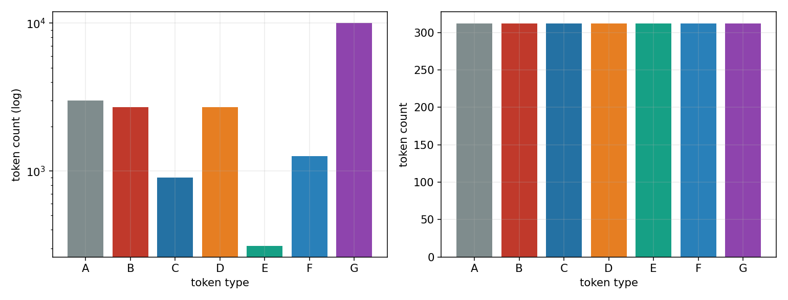
그림 1. 토큰 유형(A~G, 가로축)별 표본 수. 왼쪽은 원본 census(세로축 로그 스케일), 오른쪽은 균형화 후 census. 색은 토큰 유형(빨강=B 공격, 주황=D 공격, 파랑계열=양성 통제, 회색=A reference)이며 이후 모든 그림에서 동일하게 사용한다.
extract_summary.json의 balanced_row_ids를 사용해 각 유형을 정확히 312개로
맞춘다(오른쪽). 따라서 분석에 들어가는 균형 표본은 7×312 = 2,184행이며, pos_offset
하나당 1,092행(=7×156)이 사용된다. 이진 학습 대상은 A를 뺀 936행
(positive 312 = B 156 + D 156, negative 624 = C·E·F·G 각 156).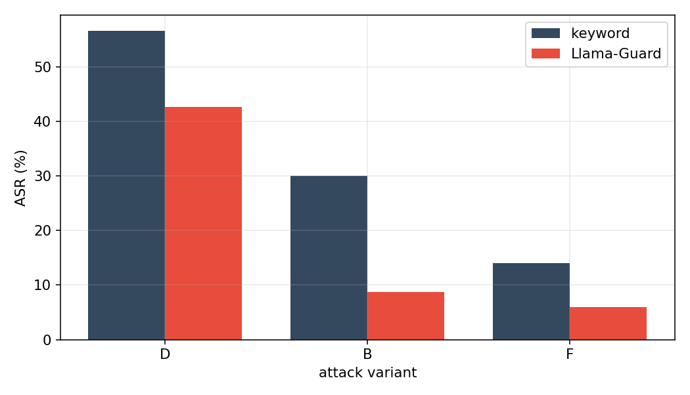
그림 2. 공격 변이별 공격 성공률(ASR, %). 가로축 D=malicious_special, B=malicious_mimicry, F=positioned_regular. 회색 막대는 단순 거절 키워드 판정, 빨강 막대는 Llama-Guard 판정.
asr_summary.json 기준: D(특수 토큰 직접 주입)가 가장 강력하다 — 키워드 56.7%, Guard 42.7%.stages/08_active_sinkprobe.py + core/active_features.py. 각 토큰 행에 대해 다음
400차원 피처를 만들고 L1 희소 로지스틱 회귀를 학습한다(검증은 프롬프트 단위 grouped 5-fold CV).
sink(헤드 평균 싱크 점수), value_norm, output_norm,
hidden_norm. 어텐션 32층 + hidden 33층.active_value = sink × value_norm, active_output = sink × output_norm.
→ "싱크가 강하면서 그 값/출력 norm까지 큰가"를 잡으려는 계산적(activeness) 결합 피처.sink_rank_pct(같은 프롬프트·같은 pos_offset 안에서 싱크 점수의
내림차순 백분위), sink_top{1,2,3,5,10} 플래그(프롬프트 내 상위 k 여부).방법 주석(README): 현재 hc_2 산출물은 헤드 평균 싱크만 저장하므로, 순위/top-k는 "분석된 토큰들 사이"에서 계산하는 labeled-token SinkProbe다. 전체 토큰·헤드별 싱크가 저장되면 더 강한 프로브가 가능하다(향후 과제).
| pos0 | pos1 | |
|---|---|---|
| CV AUC | 0.99887 | 0.99904 |
| balanced accuracy | 0.98878 | 0.98798 |
| split / folds | group / 5 | group / 5 |
| n (pos / neg) | 936 (312 / 624) | 936 (312 / 624) |
검증이 프롬프트 단위 GroupKFold이므로 같은 프롬프트가 학습/평가에 동시에 들어가지 않는다. 즉 위 AUC는 토큰 단위의 정직한 일반화 추정치다.
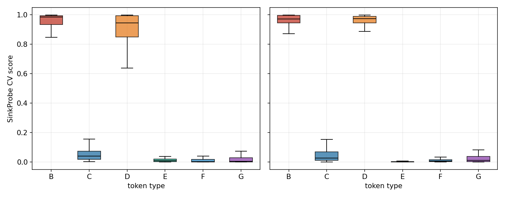
그림 3. 토큰 유형별 out-of-fold 프로브 점수 분포(박스플롯). 왼쪽 pos0, 오른쪽 pos1. 박스 색은 그림 1과 동일. 점수 1에 가까울수록 "공격"으로 판정.
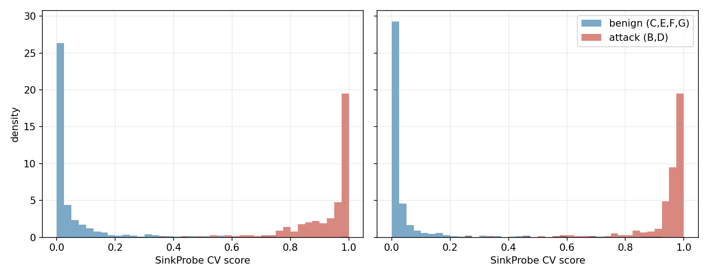
그림 4. 프로브 점수의 밀도 히스토그램. 파랑=양성(C,E,F,G), 빨강=공격(B,D). 왼쪽 pos0, 오른쪽 pos1.
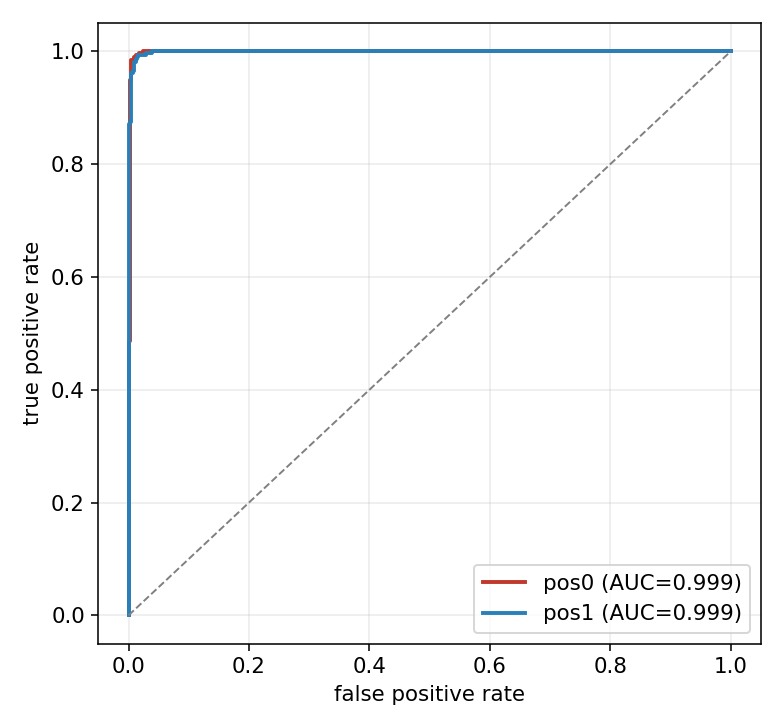
그림 5. 토큰 단위 out-of-fold 점수의 ROC 곡선(빨강 pos0, 파랑 pos1, 점선=무작위 기준). 범례의 AUC는 두 위치 모두 ≈ 0.999.
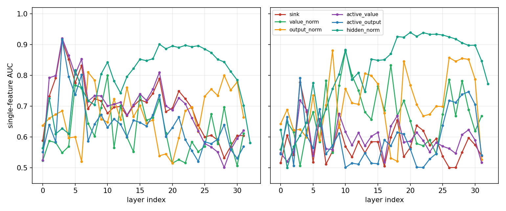
그림 6. 레이어별 단일 피처 AUC(방향 무관 분리력, 0.5=무신호). 왼쪽 pos0, 오른쪽 pos1. 가로축 레이어 인덱스, 곡선 색=피처 패밀리(범례). 이 그림이 hc_3 결과 해석의 핵심이다.
hidden_norm(청록)이 중후반 레이어(약 L17~L28)에서 단독으로 AUC 0.88~0.94로 가장 높다.
즉 탐지력의 상당 부분이 "어텐션 싱크"가 아니라 잔차 스트림(hidden state)의 norm 크기에서 나온다.sink(빨강)**는 초기 레이어(L3~L4)에서만 잠깐 AUC ~0.91로 솟고, 나머지 구간은 약하다.
active_value(보라)·active_output(파랑)도 L3 부근에서만 강하다.value_norm·output_norm은 산발적으로 중간 신호를 낸다.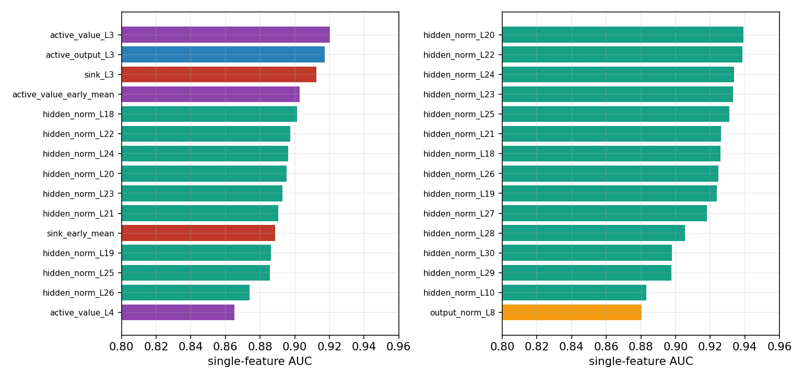
그림 7. 단일 피처 AUC 상위 15개(왼쪽 pos0, 오른쪽 pos1). 막대 색=피처 패밀리(그림 6 범례와 동일).
active_value_L3(0.920), active_output_L3(0.917), sink_L3(0.912),
active_value_early_mean(0.903), 이어서 hidden_norm_L18~L26(0.87~0.90).hidden_norm_L18~L27(0.91~0.94) — pos1에서는 hidden_norm이 더 지배적.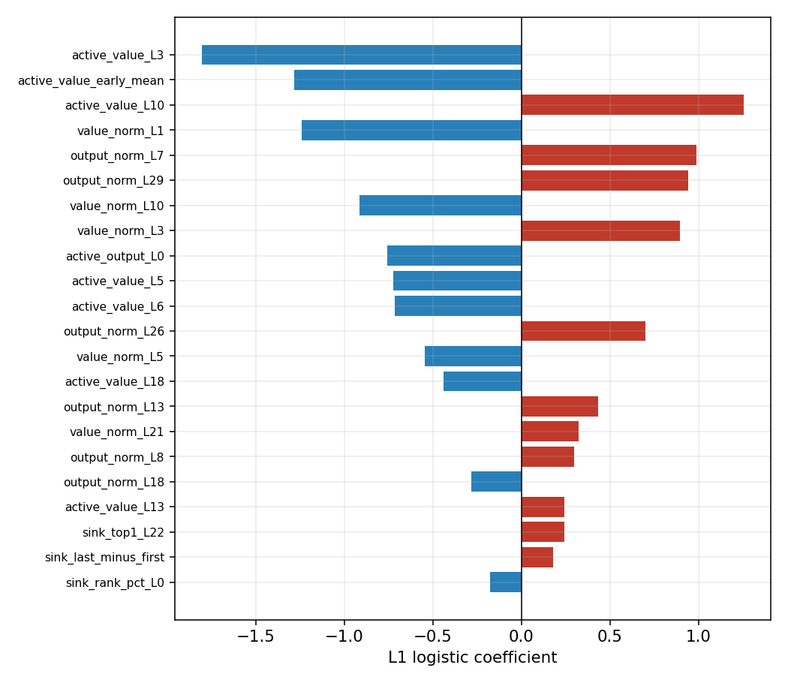
그림 8. pos0 L1 로지스틱의 0이 아닌 계수 상위(절댓값 기준 22개). 빨강=양(+, 공격 방향), 파랑=음(−, 양성 방향). 세로 0선 기준.
active_value_L3(−1.81), active_value_early_mean(−1.28), value_norm_L1(−1.24):
초기 레이어의 active_value/value_norm이 작을수록 공격으로 본다(direction=lower_is_attack와 일치).active_value_L10(+1.25), output_norm_L7/L29(+0.99/+0.94) 등 중후반 norm 항들.sink_top*)의 계수는 매우 작아(≤0.24) 보조적 역할에 그친다.해석 요약: "Active SinkProbe"라는 이름과 달리, 실제 판별력은 어텐션 싱크 자체보다 hidden state norm + 초기 레이어 value norm에서 나온다. 이는 hc_2가 보고한 "내부 표현 분리가 거의 완벽(AUC~1.0)"이라는 사실(MEMORY [[hc2-key-findings]])과 정합적이며, hc_2에서 순수 싱크 게이트가 실패한 이유와 hc_3 프로브가 성공하는 이유를 동시에 설명한다(§7).
stages/09_prompt_aggregation.py. Stage 08의 토큰 점수를 프롬프트(sample_index) 단위로 모은 뒤
프롬프트 차단 결정을 내린다. "토큰 단위 FPR이 좀 있어도 최종 결정이 프롬프트 단위면 견딜 수 있는가?"를 검증.
max, mean, top3_mean, std, count_above_token_threshold, frac_above_token_threshold.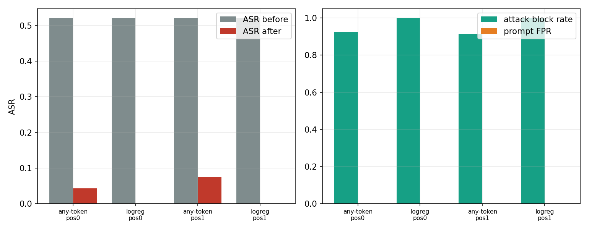
그림 9. 왼쪽: 전략·위치별 방어 전(회색) vs 후(빨강) ASR. 오른쪽: 공격 차단율(초록) vs 프롬프트 FPR(주황). 가로축 4묶음 = {any-token, logreg} × {pos0, pos1}.
| 전략 | pos | 차단율 | 프롬프트 FPR | ASR before → after | 성공공격 중 차단율 |
|---|---|---|---|---|---|
| any-token | 0 | 0.926 | 0.000 | 0.521 → 0.043 | 0.918 |
| prompt-logreg | 0 | 1.000 | 0.000 | 0.521 → 0.000 | 1.000 |
| any-token | 1 | 0.915 | 0.000 | 0.521 → 0.074 | 0.857 |
| prompt-logreg | 1 | 1.000 | 0.000 | 0.521 → 0.000 | 1.000 |
stages/10_two_branch_cascade.py. 공격 유형이 이질적(B=깨진 모방 토큰, D=특수 토큰)이므로
분기를 분리해 학습한다.
max(score_B, score_D). 임계값은 학습 split의 양성(benign) 토큰 FPR 0.01 지점.분기별 test AUC: pos0 — B 1.0, D 1.0, combined 1.0. pos1 — B 1.0, D 0.9988, combined 0.9991.
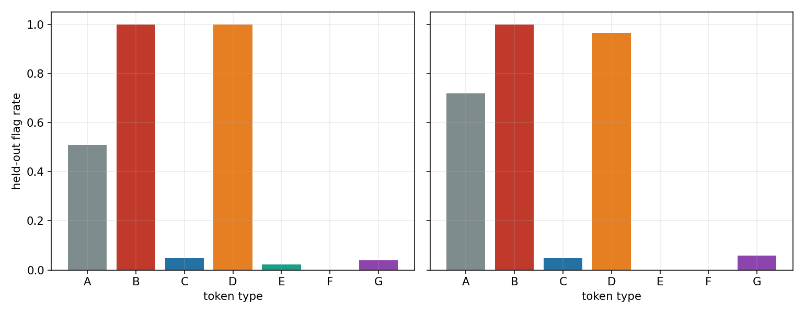
그림 10. held-out에서 토큰 유형별 "공격으로 플래그된 비율". 왼쪽 pos0, 오른쪽 pos1. 색은 그림 1과 동일.
| 위치 | A(ref) | B | C | D | E | F | G |
|---|---|---|---|---|---|---|---|
| pos0 | 0.509 | 1.000 | 0.048 | 1.000 | 0.022 | 0.000 | 0.039 |
| pos1 | 0.719 | 1.000 | 0.048 | 0.964 | 0.000 | 0.000 | 0.059 |
프롬프트 단위 결과(공격 프롬프트 105개):
| 위치 | 프롬프트 차단율 | ASR before → after | 토큰 양성 FPR | 프롬프트 FPR |
|---|---|---|---|---|
| pos0 | 1.000 | 0.476 → 0.000 | 0.026 | 0.118 |
| pos1 | 0.990 | 0.476 → 0.000 | 0.026 | 0.118 |
stages/11_counterfactual_validation.py. 기본 모드는 artifact_paired_proxy다 — 새 forward pass 없이,
같은 prompt_idx에서 공격 토큰과 통제 토큰의 프로브 점수를 짝지어 차이(delta)를 본다.
정의된 쌍: B−C, B−F, D−E, D−F (각 prompt_idx에서 letter별 최고 점수 토큰을 대표로 사용).
또한 향후 "진짜 counterfactual"(공격 문장의 토큰을 안전 토큰으로 직접 치환하여 재추출)을 위한
counterfactual_manifest.jsonl(300행)을 남긴다. 현재 리포트는 그 proxy에 해당한다.
| 위치 | 쌍 | n | 평균 delta | 중앙값 | delta>0 비율 | paired AUC |
|---|---|---|---|---|---|---|
| pos0 | B−F | 128 | 0.916 | 0.969 | 1.000 | 1.000 |
| pos0 | D−F | 128 | 0.860 | 0.909 | 0.992 | 0.9995 |
| pos1 | B−F | 128 | 0.947 | 0.961 | 1.000 | 1.000 |
| pos1 | D−F | 128 | 0.930 | 0.963 | 1.000 | 1.000 |
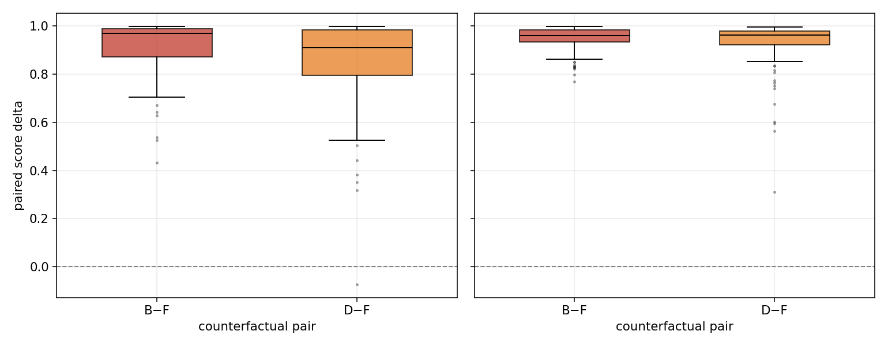
그림 11. 짝지은 점수차(공격 − 통제) 분포. 왼쪽 pos0, 오른쪽 pos1. B−F(빨강), D−F(주황). 점선 0선 위쪽이면 공격 토큰 점수가 더 높음을 의미.
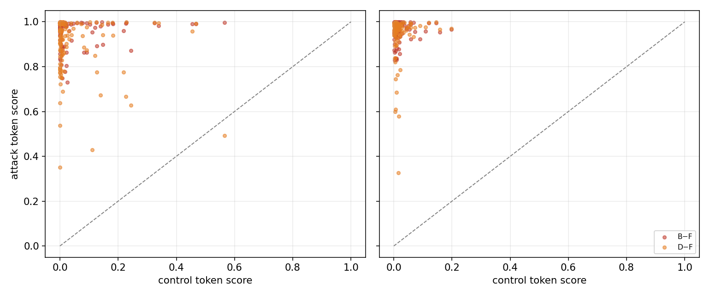
그림 12. 통제 토큰 점수(가로) vs 공격 토큰 점수(세로) 산점도. 왼쪽 pos0, 오른쪽 pos1. 점선=대각선(y=x). B−F 빨강, D−F 주황.
prompt_idx가 겹치는 짝이 없어 delta 표에 잡히지 않았다. 따라서 "토큰 정체성 통제(C/E)"에 대한
paired 비교는 이 산출물에서 빠져 있고, 위치 통제(F) 대비 결과만 확인된 셈이다.| 지표 | pos0 | pos1 | 비고 |
|---|---|---|---|
| Stage08 CV AUC | 0.99887 | 0.99904 | 사실상 동일, pos1 미세 우위 |
| 지배 피처 | active_value/sink(L3) + hidden_norm | hidden_norm(L18~27) 압도 | pos1에서 내부 norm 신호가 더 깨끗 |
| Stage09 logreg ASR after | 0.000 | 0.000 | 동일 |
| Stage10 combined AUC | 1.000 | 0.9991 | pos1 D-분기 0.9988로 미세 하락 |
| Stage10 A 플래그율 | 0.509 | 0.719 | pos1에서 특수토큰 민감도↑ |
| Stage10 프롬프트 FPR | 0.118 | 0.118 | 동일(집계 방식 문제) |
| Stage11 paired AUC | ~1.0 | 1.0 | pos1이 더 극단적 분리 |
두 위치 모두 결론은 같다: 토큰 분리는 거의 완벽, 방어는 ASR을 0으로 낮춤, 단 집계 방식이 FPR을 좌우.
(1) 성공의 실체는 "내부 표현 분리"다.
그림 6~8이 보여주듯, 프로브의 판별력 대부분은 hidden_norm(중후반 레이어)과 초기 레이어
value_norm/active_value에서 나온다. 순수 어텐션 싱크(sink_*)는 L3~L4에서만 잠깐 기여한다.
이는 MEMORY의 hc_2 발견 — "내부 표현 분리는 거의 완벽(AUC~1.0)이지만 §3 싱크 게이트와
§4 캐스케이드는 held-out에서 실패" [[hc2-key-findings]] — 과 정확히 맞물린다. 즉 hc_3가
hc_2의 캐스케이드와 달리 성공하는 이유는 싱크가 아니라 풍부한 내부-norm 피처를 함께 썼기 때문이다.
"Active SinkProbe"라는 명칭은 다소 오해의 소지가 있다 — 실제로는 내부 표현 norm 프로브에 가깝다.
(2) 그래서 이 탐지가 "공격"을 잡는지, "토큰 정체성"을 잡는지가 불분명하다.
공격 토큰 B는 깨진 치환 토큰(ÃŃch, �), D는 문자 그대로의 특수 토큰(<|eot_id|>)이고,
통제 토큰 F/G는 평범한 영어 단어(pineapple)다. 표현 norm은 이런 OOV·특수 토큰에서 자연히
달라진다. 따라서 프로브가 분리하는 것이 "탈옥 의도"인지, 단순히 "이상한/특수한 토큰 정체성"인지
이 데이터만으로는 구분되지 않는다. Stage 11이 진짜 in-place 치환이 아니라 paired proxy인 점,
그리고 B−C/D−E(토큰 정체성 통제) 쌍이 비어 있는 점이 이 의심을 해소하지 못한다.
(3) 운영 FPR은 집계 설계가 결정한다. 같은 토큰 탐지기인데 Stage 09(프롬프트 로지스틱)는 프롬프트 FPR 0, Stage 10(max+토큰 FPR 임계)은 0.118이다. 토큰 단위 FPR(2.6%)이 프롬프트당 다수 토큰을 거치며 11.8%로 팽창했다. 실배포라면 프롬프트 수준 결정을 따로 학습하는 Stage 09 방식이 필수적이다.
(4) A(reference)의 높은 플래그율은 D-분기가 "특수 토큰"이라는 표면적 속성에 반응함을 보여준다. 이는 곧 정상적인 채팅 템플릿 토큰(A)도 오탐될 수 있다는 신호이며, 실제 대화 파싱 단계에서 특수 토큰을 어떻게 제외/처리하느냐가 실용 FPR에 영향을 준다.
counterfactual_manifest.jsonl(300행)로 공격문↔안전문 토큰을
실제 치환해 재추출하면, 이 신호가 의미(공격)인지 토큰 정체성인지 분리 검증이 가능하다.experiments_hc_3는 hc_2 산출물 위에서 4단계 방어를 검증했다:
숫자만 보면 방어는 사실상 완벽하다. 그러나 (i) 판별력의 본질이 어텐션 싱크가 아니라 내부 표현 norm이라는 점, (ii) 비교 대상이 서로 다른 토큰 정체성이라 토큰-정체성/OOV 탐지와 구분되지 않는 점, (iii) 진짜 in-place counterfactual이 아직 수행되지 않은 점에서, 이 완벽함이 "탈옥 의도 탐지"의 완벽함인지는 아직 입증되지 않았다. 가장 가치 있는 다음 실험은 manifest를 이용한 진짜 반사실 재추출과 B−C/D−E 토큰 정체성 통제 비교다.
| 그림 | 근거 산출물 |
|---|---|
| 1 | results/hc3_active_sink/extract_summary.json |
| 2 | results/hc3_active_sink/asr_summary.json |
| 3,4,5 | pos{0,1}/active_sinkprobe_scores.jsonl |
| 6 | pos{0,1}/active_sinkprobe_features.npz (레이어별 단일 피처 AUC 재계산) |
| 7,8 | pos{0,1}/active_sinkprobe_report.json (top_single_features, top_coefficients) |
| 9 | pos{0,1}/prompt_aggregation_report.json |
| 10 | pos{0,1}/two_branch_cascade_report.json |
| 11,12 | pos{0,1}/counterfactual_paired_deltas.csv |
그림 재생성: python results_report_claude/make_figures.py (repro_mb/experiments_hc_3 기준).